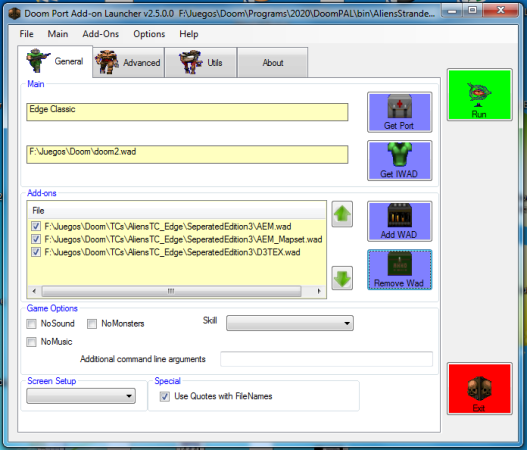
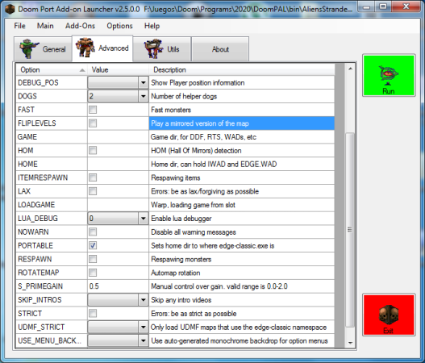
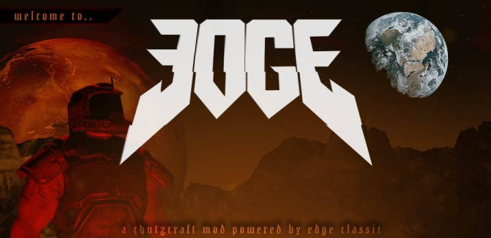
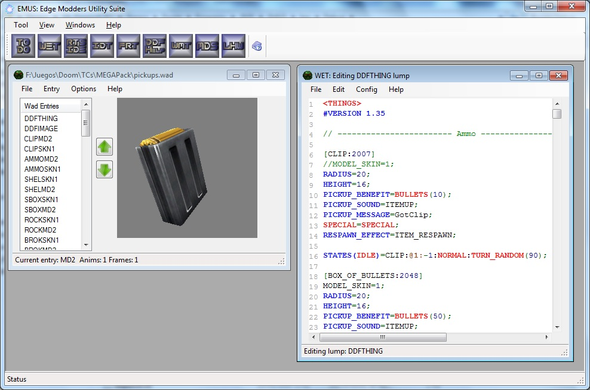

Officially curated mods page for EDGE-Classic - ModDB

Officially curated mods page for EDGE-Classic - ModDB
|
DoomPAL game launcher A simple to use graphical front end to set the command-line options for EDGE by simply clicking what you want and then launching the game, instead of repeatedly typing commands or making multiple shortcuts. Visit homepage here. |
EDGE64 modEDGE 64 is a Doom 2 modification megawad for the EDGE source port. It is a project in the style of Doom 64, however it is not created as a total conversion of Doom 64 Visit homepage here. |
EMUS: Edge Modders Utility SuiteAn application composed of several tools which can come in handy for your average EDGE modder. You've got RTS scripting, DDF editing, Wad Merging, Lump Editing and DDF Off-Line all in the one application Visit homepage here. |